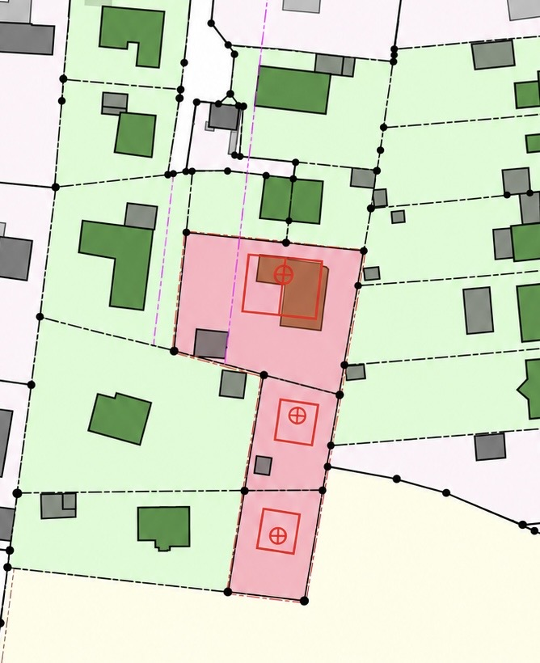

Hinterlandbebauung
Ein zweites Gebäude auf einem tiefen Grundstück.
Ungenutzte Grundstücksflächen entwickeln

Nachverdichtung nutzt vorhandene Grundstücke und bestehende Infrastruktur effizienter und kann gerade in gewachsenen innerstädtischen Lagen einen wichtigen Beitrag zur Schaffung zusätzlicher Wohn- und Nutzflächen leisten. Innenhöfe, Baulücken, Nebenflächen oder bislang untergenutzte Grundstücksbereiche können wertvolle Entwicklungspotenziale bieten, ohne neue Standorte erschließen zu müssen.
Entscheidend ist, das mögliche Bauvolumen sorgfältig in den städtebaulichen und baulichen Bestand einzufügen. Wir verbinden deshalb die planungsrechtliche Prüfung mit einer technischen und wirtschaftlichen Einordnung. Erschließung, Abstandsflächen, Belichtung, Stellplätze, Baumbestand und vorhandene Gebäudestrukturen werden ebenso berücksichtigt wie Investitionskosten, erzielbare Flächen, Ertragsperspektiven und projektspezifische Risiken.
Auch Nachhaltigkeitsaspekte spielen eine wichtige Rolle: Die Nutzung bereits erschlossener Standorte schont Flächenressourcen, nutzt vorhandene Infrastruktur und kann bestehende Quartiere qualitätsvoll weiterentwickeln. Unterschiedliche Entwicklungsvarianten werden deshalb nicht nur nach ihrer Flächenausbeute, sondern auch nach städtebaulicher Qualität, Genehmigungsfähigkeit und langfristiger Tragfähigkeit bewertet.
Aus diesen Faktoren entwickeln wir realistische Szenarien und eine klare Perspektive für das Grundstück. Ziel ist eine Nachverdichtung, die zusätzliche Flächenpotenziale sinnvoll aktiviert und Eigentümern eine belastbare Grundlage für die weitere Planung, wirtschaftliche Bewertung und Umsetzung gibt.
Ein zweites Gebäude auf einem tiefen Grundstück.
Eine offene Stelle im Blockrand wird geschlossen.
Ein kompakter Baukörper im Inneren eines Blocks.
Eine unbebaute Ecke verbindet vorhandene Gebäudeflügel.
Ein breites Grundstück erhält einen weiteren Baukörper.
Eine versiegelte Nebenfläche wird baulich neu genutzt.
Schematische Beispiele. Erschließung, Abstandsflächen, Belichtung, Baumbestand und Planungsrecht sind für jedes Grundstück gesondert zu prüfen.
Wir prüfen, welche zusätzliche Bebauung sich aus den planungsrechtlichen Vorgaben und der vorhandenen Umgebungsstruktur ableiten lässt.
Wir entwickeln erste realistische Baukörper- und Flächenszenarien für die vorhandenen Grundstücksreserven.
Wir bewerten die zentralen Rahmenbedingungen wie Erschließung, Abstandsflächen, Stellplätze, Baumbestand und weitere mögliche Einschränkungen.
Wir setzen den voraussichtlichen Investitionsrahmen in Beziehung zu den zusätzlich entwickelbaren Flächen und möglichen Erträgen.
Wir vergleichen unterschiedliche Entwicklungsmöglichkeiten und ordnen deren Chancen, Risiken und wirtschaftliche Tragfähigkeit ein.
Wir fassen die Ergebnisse zu einer nachvollziehbaren Empfehlung für die weitere Projektentwicklung zusammen.
Wir begleiten die Nachverdichtung von der Konkretisierung und Fachplanung über das Genehmigungsverfahren bis zur baulichen Realisierung und koordinieren die nächsten Schritte mit den erforderlichen Projektbeteiligten.
Senden Sie uns die Adresse des Objekts und eine kurze Beschreibung. Wir melden uns persönlich bei Ihnen.
Im ersten Gespräch klären wir Ihre Ziele und die nächsten Schritte. Umfang und Vergütung einer vertieften Prüfung vereinbaren wir vor Beginn.
Elbhaus Projektentwicklung GmbH
Barmbeker Str. 142
22299 Hamburg